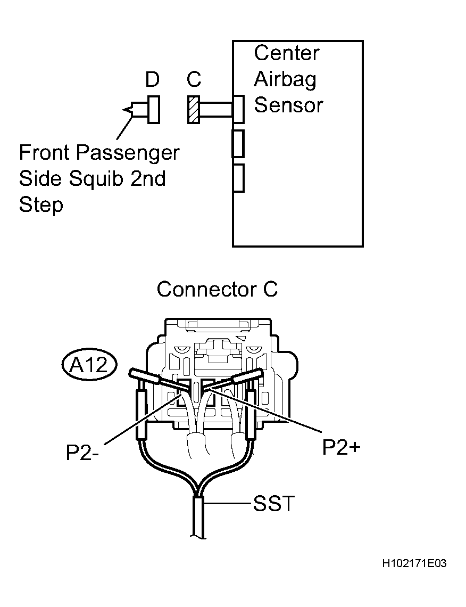

Inspection Procedure
HINT:
- Change the intelligent tester to the "check mode" (signal check) (see DTC CHECK / CLEAR ).
- After selecting the "check mode" (signal check), perform the simulation method by wiggling each connector of the airbag system or driving the vehicle on various types of roads (see DTC CHECK / CLEAR ).
- CHECK FRONT PASSENGER AIRBAG ASSEMBLY (FRONT PASSENGER SIDE SQUIB 2nd STEP)
- Turn the ignition switch OFF.
- Disconnect the cable from the negative (-) battery terminal, and wait for at least 90 seconds.
- Disconnect the connectors from the front passenger airbag.
- Connect the white wire side of SST (resistance 2.1 Ω) to connector "C" (black connector).CAUTION: Never connect a tester to the front passenger airbag (front passenger side squib 2nd step) for measurement, as this may lead to a serious injury due to airbag deployment.NOTE:
- Do not forcibly insert SST into the terminals of the connector when connecting them.
- Insert SST straight into the terminals of the connector.
SST 09843-18060
- Connect the cable to the negative (-) battery terminal, and wait for at least 2 seconds.
- Turn the ignition switch ON, and wait for at least 60 seconds.
- Clear the DTCs stored in the memory (see DTC CHECK / CLEAR ).
- Turn the ignition switch OFF.
- Turn the ignition switch ON, and wait for at least 60 seconds.
- Check the DTCs (see DTC CHECK / CLEAR
).
OK:
DTC B1815, B1816, B1817, B1818 or 54 is not output.
HINT:
Codes other than DTC B1815, B1816, B1817, B1818 or 54 may be output at this time, but they are not related to this check.
OK : REPLACE FRONT PASSENGER AIRBAG ASSEMBLY

Courtesy of © TOYOTA, LICENSE AGREEMENT TMS1002NG : Go to Next Step
- CHECK CONNECTOR
- Turn the ignition switch OFF.
- Disconnect the cable from the negative (-) battery terminal, and wait for at least 90 seconds.
- Disconnect SST from connector "E".
- Check that the instrument panel wire connectors (on the front passenger airbag side) are not damaged.
OK:
The lock button is not disengaged, or the claw of the lock is not damaged or deformed.
NG : REPAIR OR REPLACE INSTRUMENT PANEL WIRE ASSEMBLY
OK : Go to Next Step
- CHECK FRONT PASSENGER SIDE SQUIB 2nd STEP CIRCUIT
- Disconnect the connectors from the center airbag sensor.
- Check for a short to B+ in the circuit.
- Connect the cable to the negative (-) battery terminal, and wait for at least 2 seconds.
- Turn the ignition switch ON.
- Measure the voltage of the wire harness side connector.
Standard voltage
TESTER CONNECTION - SPECIFIED CONDITION (VOLTAGE)Tester Connection Specified Condition A12-3 (P2+) - Body ground Below 1 V A12-4 (P2-) - Body ground
- Check for an open in the circuit.
- Turn the ignition switch OFF.
- Disconnect the cable from the negative (-) battery terminal, and wait for at least 90 seconds.
- Measure the resistance of the wire harness side connector.
Standard resistance
TESTER CONNECTION - SPECIFIED CONDITION (RESISTANCE)Tester Connection Specified Condition A12-3 (P2+) - A12-4 (P2-) Below 1 Ω
- Check for a short to ground in the circuit.
- Check for a short in the circuit.
- Release the activation prevention mechanism built into connector "B" (see DIAGNOSIS SYSTEM ).
- Measure the resistance of the wire harness side connector.
Standard resistance
TESTER CONNECTION - SPECIFIED CONDITION (RESISTANCE)Tester Connection Specified Condition A12-3 (P2+) - A12-4 (P2-) 1 MΩ or higher
NG : REPAIR OR REPLACE INSTRUMENT PANEL WIRE ASSEMBLY
OK : USE SIMULATION METHOD TO CHECK